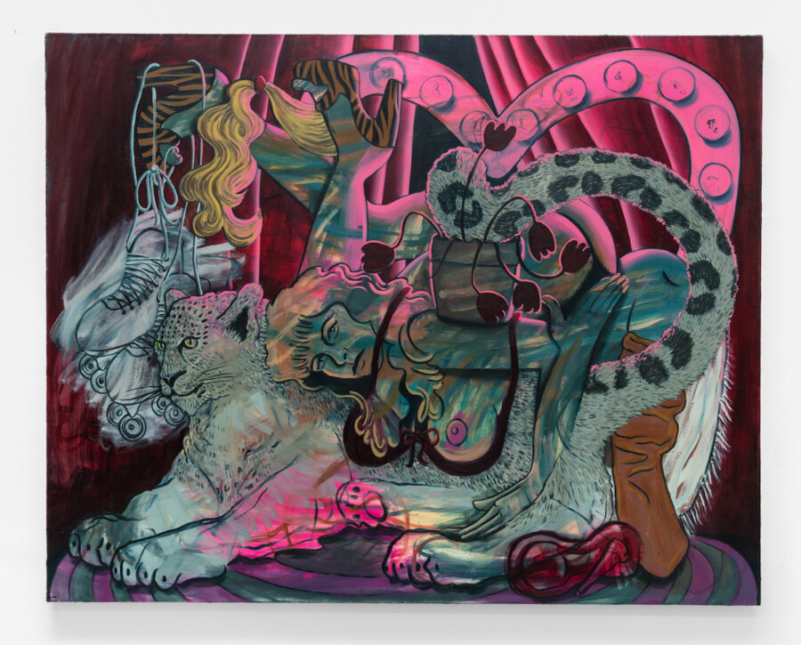

Lindsey Kircher: Girl Talk
A solo exhibition of paintings by Lindsey Kircher. The exhibition gathers a group of recent figurative works that stage psychologically charged scenes populated by women, animals, and symbolic objects. Through dense compositions and saturated color, Kircher constructs theatrical environments that blur the boundaries between interior life and performance.